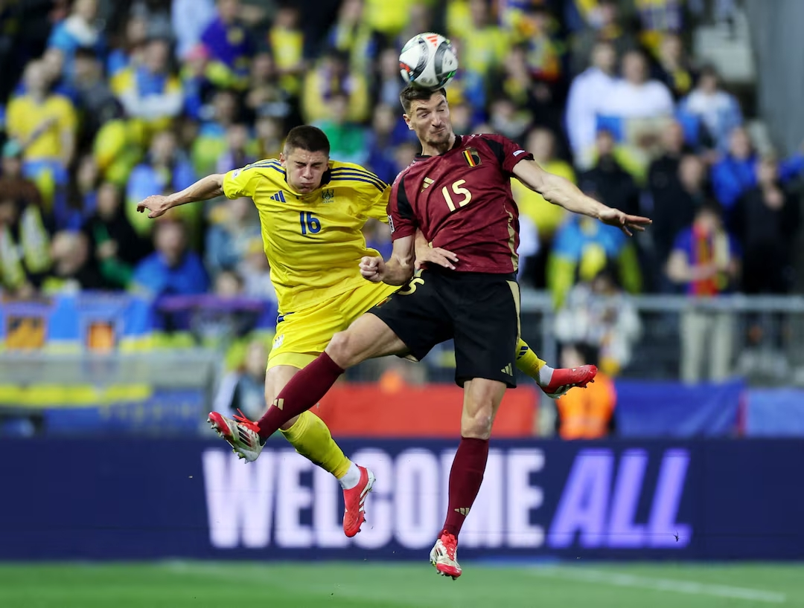
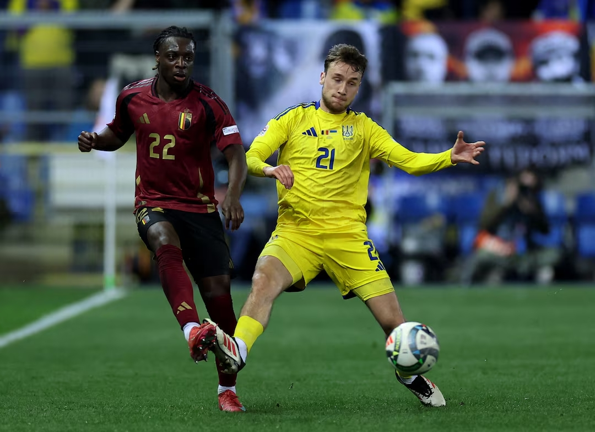
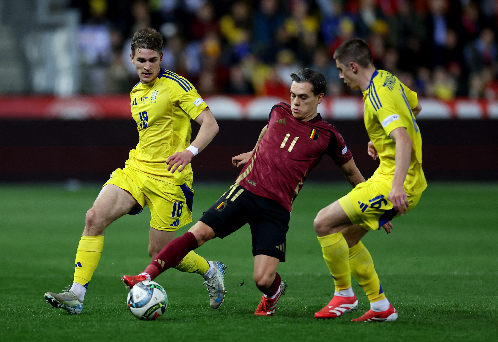

Україна зазнала поразки від Бельгії та залишилась у дивізіоні B Ліги націй
Національна збірна України посеред тижня в рамках березневої міжнародної перерви приємно здивувала своїх уболівальників вольовою перемогою над Бельгією в Мурсії (3:1). Проте це був лише перший крок команди Сергія Реброва до омріяного повернення до дивізіону A Ліги націй УЄФА, тоді як вирішальний момент усе одно наставав у Генку під час матчу-відповіді.
Наша тактика на тепер уже для "Червоних дияволів" домашню гру була простою та передбачуваною — захищати вже здобутий результат. Ціною атакувальних недоліків схеми з п’ятьма захисниками вже з перших хвилин? Ну, добре, будь-які засоби стануть у пригоді, коли ситуація є критичною, а момент — надзвичайно важливим.
Відповідно все, на що український уболівальник міг розраховувати в цій зустрічі, це виконання головного завдання нашою командою, тоді як яскравій атакувальній грі відводився навіть не десятий порядок. Це була жертва, ми її принесли, але, на жаль, настав момент за неї спитати.
Бо потрібного результату, як такого, здобуто в підсумку не було. При цьому в першому таймі вже ще було відносно спокійно, як показав подальший досвід. Україна відбивалась, Бельгія атакувала — усе це зрозуміло, прогнозовано, і зрештою малоцікаво. Моменти господарі гри також створювали біля наших воріт, але чергові дальні удари Де Брюйне в площину не летіли, а те, що летіло, ліквідовував у підсумку Лунін.
Добре, у такому ритмі ми просиділи першу половину, але не побачили навіть натяку на те, що команда Сергія Реброва прагне контратакувати, що вдавалось робити навіть у першій грі, коли було геть скрутно в обороні. Тим часом тиск суперників у другому таймі лише посилювався, і зрештою вдалими замінами Руді Гарсія таки зробив вирішальний для своєї команди крок.
Щойно Де Кейпер з’явився на полі, як у його напрямку пішов пас Доку з лівого флангу штрафного, а вже за п’ять хвилин Де Брюйне вчергове подав на Лукаку, а той у падінні забив у лівий кут наших воріт. А ще за 11 хвилин Ванакен від центрального кола розігнав того-таки Лукаку на правий фланг нашого штрафного, а Ромелу пробив туди ж, куди й до цього. І все. Ніякої більше переваги за рахунком, більше того — ми вже програємо та перебуваємо на межі провалу.
Там і залишились у підсумку, хоча й моменти в атаці таки почали з’являтись уже під завісу основного часу. Удар головою від Довбика пригадується охоче, тоді як ще до першого гола був доволі цікавий шанс у Судакова, але той трохи не дотягнувся в падінні до м’яча. Проте на цьому перелік гостроти від "синьо-жовтих" себе вичерпав, тож довелось зрештою визнати — зарано нам ще дивізіону A Ліги націй. Знову зарано.
Бельгія — Україна 3:0 (перший матч – 1:3)
Голи: Де Кейпер, 70, Лукаку, 75, 86 – Шевченко, 50, 60, 75
Бельгія: селс — меньє (де кейпер, 69), фас, дебаст, кастань — ванакен, раскін (гейнен, 89), де брюйне — троссар (салемакерс, 69), лукаку, доку.
Україна: лунін — забарний, сваток (яремчук, 89), матвієнко — зінченко, калюжний, ярмолюк, миколенко — гуцуляк (ярмоленко, 89), ванат (довбик, 69), судаков (циганков, 68).
Попередження: Раскін, Ванакен — Забарний, Зінченко, Гуцуляк, Ванат
Додаткове завдання
Maecenas lacinia felis nec placerat sollicitudin. Quisque placerat dolor at scelerisque imperdiet. Phasellus tristique felis dolor.
Maecenas elementum in risus sed condimentum. Duis convallis ante ac tempus maximus. Fusce malesuada sed velit ut dictum. Morbi faucibus vitae orci at euismod. Integer auctor augue in erat vehicula, quis fermentum ex finibus.
Mauris pretium elit a dui pulvinar, in ornare sapien euismod. Nullam interdum nisl ante, id feugiat quam euismod commodo. Sed ultrices lectus ut iaculis rhoncus. Aenean non dignissim justo, at fermentum turpis. Sed molestie, ligula ut molestie ultrices, tellus ligula viverra neque, malesuada consectetur diam sapien volutpat risus. Quisque eget tortor lobortis, facilisis metus eu, elementum est. Nunc sit amet erat quis ex convallis suscipit. ur ridiculus mus.